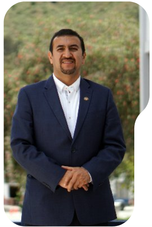
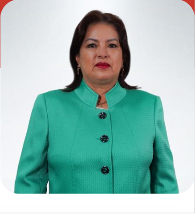

Nikolay Aguirre, Ph. D.
Rector
Ingeniero Forestal y Ph.D. en Ciencias Forestales, con más de 25 años de experiencia en investigación sobre ecología, biodiversidad y restauración, con más de 85 publicaciones.
Contacto
Horario Atención
Lunes a viernes 8:00 a 12:30
y de 15:00 a 18:30
y de 15:00 a 18:30
Elvia Maricela
Zhapa Amay
Vicerrectora
Doctora en Contabilidad y Auditoría, con maestrías en Docencia e Investigación y Gerencia Contable Financiera. Experta en diversas áreas contables y financieras, con amplia trayectoria docente, investigadora y directiva en la UNL. Ha publicado libros y artículos científicos.
Contacto
Horario Atencion
Lunes a viernes 8:00
a 12:30 y de 15:00 a 18:30
Lunes a viernes 8:00
a 12:30 y de 15:00 a 18:30
